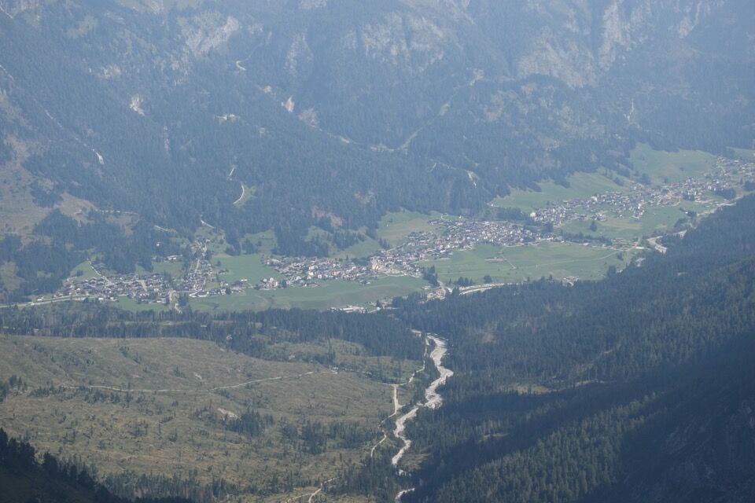

Traversata di grande soddisfazione in ambiente poco frequentato: particolarmente interessante è il raggiungimento della cima ovest, che quasi nessuno raggiunge preferendogli la più facile e addomesticata cima est.
Il problema del raggiungimento della cima principale (ovest) da Oberenghe viene risolto da una fantastica cengia di camosci sul lato nord (riesumata dal sommo Gaberscik?) che ti fa entrare nel ventre della montagna; l'accesso alla cima va cercato e il bello è proprio questo.
Per traversare alla est, chi mai si tufferebbe in quel budello senza saperlo! Poi, retta via o no, un bel tratturo di camosci ci ha portato fuori dai guai, alla forcella fra la cima ovest e quella di mezzo. Le bestie le san tutte: è questo l'alpinismo che mi piace.
In una bella giornata d'agosto partiamo dalla val Pesarina alla volta della Cresta di Enghe: all'ultimo cambiamo i piani e decidiamo di salire da Oberenghe.
Impressionante il passaggio sotto la parete nord della Creta di Mimoias.

L'arcigna cresta ovest della Cresta di Enghe.
Bellissimo e caratteristico foro di cresta.
Su per delle placchette di II e sbuchiamo su un intaglio: bellissima vista verso Sappada.
La tierçe, con sotto la Cengia Manuela.

Ma la cosa più bella è che qui comincia una cengia che ci porterà nel ventre della montagna.
Qualche passaggino sulla cengia.
L'indiano di Enghe.
Ad una certa, sviati da un omino che forse non era un omino, ci infognamo su per un canalino di II; resoci conto che la cosa diventava troppo impegnativa, abbiamo girato i tacchi.
In realtà trovo una somiglianza fra l'itinerario descritto dal Gaberscik (n. 621 dell'edizione 2021) e il percorso che abbiamo tentato: la relazione, a momenti un po' vaga (anche sulle difficoltà: II o più), afferma di salire un canalino con passaggi di II, poi montare su intaglio e scendere (II o più) per prendere una rampa che porta diretta al cimotto ovest della bifida cima ovest. In effetti, il canalino che abbiamo risalito in alto presentava un salto difficile: a dx un passaggio molto friabile di II+, che non ho osato tentare, mentre a sx tramite una cengetta di pochi metri siamo arrivati su un minuscolo intaglio; a sx c'è pure una facile rampa che porta verso il cimotto ovest, però fra l'intaglio e la rampa di sono 4 metri di vuoto! Potrebbe essere quel passaggio la discesa di II o più di cui parla il Gaberscik, ma auguri...

E mo'? Chiaramente, tanti omini sulla cengia, ma al primo dubbio questi spariscono.
Ma il bello è proprio cercarsi il percorso, e in breve arriviamo in cima...
...o meglio, al cocuzzolo orientale della bifida cima ovest: il raggiungimento del cocuzzolo occidentale (quello che si intuiva essere la cima nella foto prima della precedente) - peraltro della stessa altezza - è piuttosto ardito.
Sappada.
La Terza Grande: e io che speravo fosse possibile salire per cresta dal monte Fiorito...
Pochi minuti in cima e iniziamo a traversare, che qua la faccenda è tutt'altro che ovvia.
Punto chiave: guai a farsi invogliare dai prati a dx, bisogna scendere in questo tetro e friabile budello...
Ma anche all'uscita di questo, la faccenda è poco chiara: là la forcella, fra cima ovest e cima di mezzo, che dobbiamo raggiungere. Dopo qualche titubanza abbiamo traversato a mezza costa per un bel tratturo di camosci.
Quasi all'ultimo il camminamento sembrava interrotto, ma un insperato passaggio ci ha portato fuori dai guai.
Arriviamo sulla cima di mezzo.
Laggiù il gruppo dei Clap a cui penso da un po'.
La lunga cresta percorsa: la cima più alta è la vetta principale (ovest) della Cresta di Enghe.
Sulla cima est.
Laggiù il passo Èlbel che dobbiamo raggiungere (via Patera).
Qualche dubbio però ci viene, d'altronde non si era mai passati di qui: canalone o pala erbosa? Vada per quest'ultima, ma che ripida!
Credo che la via Patera passi per il canale in centro, mentre noi siamo scesi per il pendio a rocce e verdi che sta fra l'origine dei due canali, poi per il canale di sx.
Ormai è fatta.
Inaccettabile per me la quantità di bolli rossi che si trovano su questo pendio: li si vede già dal passo Èlbel. Non ce ne dovrebbe essere neppure uno.
***